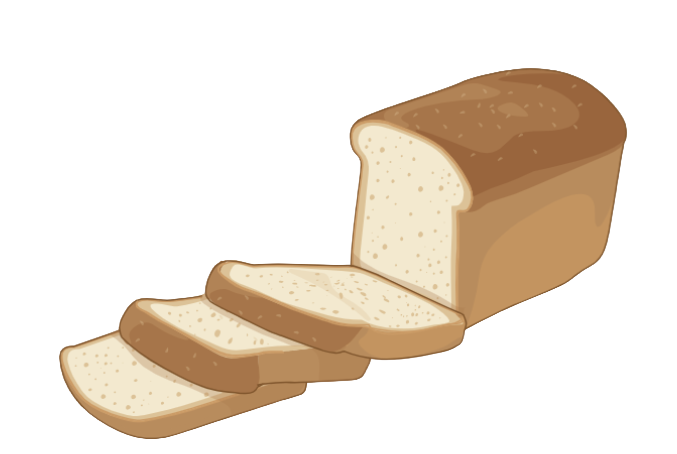
Carbohydrates
A pathway focused on maltose, a sugar associated with carbohydrate digestion.
TARGET · MALTOSE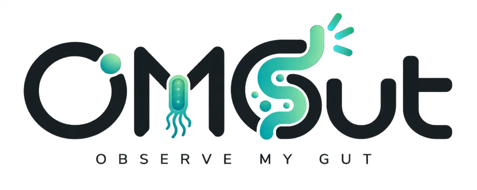
Stay curiousSMALL SIGNALS. BIG QUESTIONS.
Your gut has a story to tell. We’re exploring how engineered probiotics and a sweat patch could help us understand it.
Explore the scienceA research concept, made understandable.
OUR UNIVERSITIES
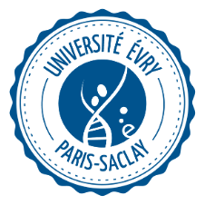
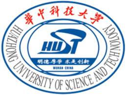
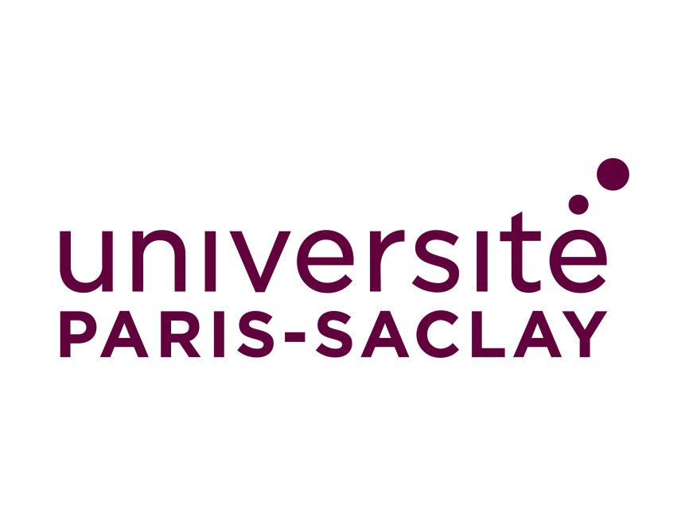
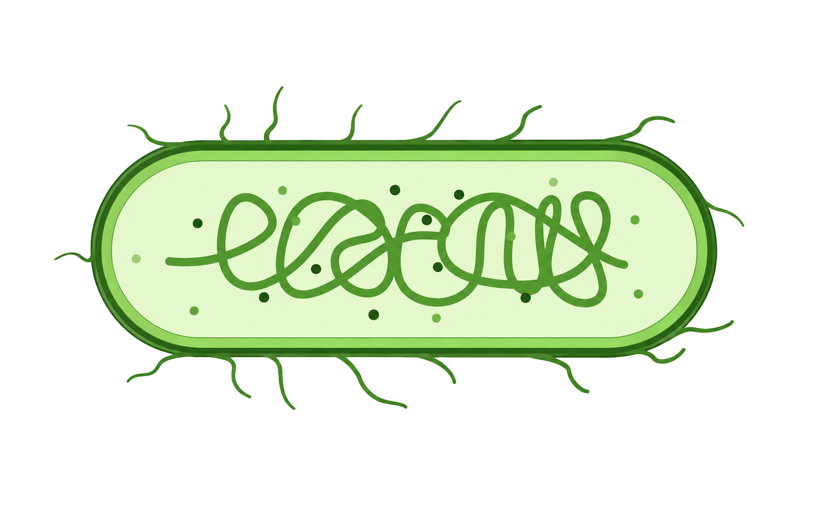
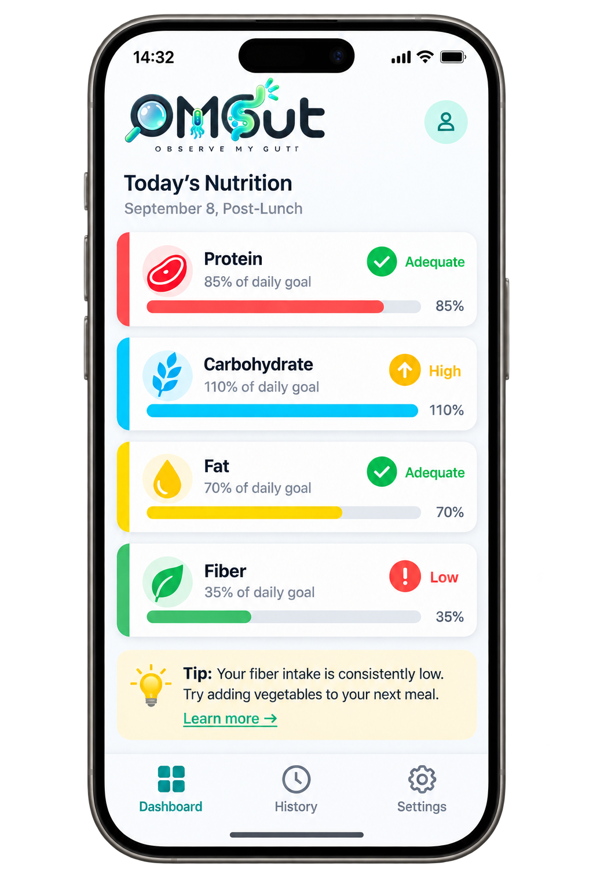
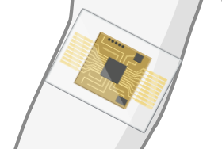
Probiotics. Sweat patch. Nutritional insights.
Proposed system · not live health data
THE IDEA
Food is only the beginning. Digestion and microbial activity produce a complex mix of signals. OMGut explores a way to connect those signals to information we can see.
Our proposed approach brings together engineered probiotics, molecular reporters and a wearable sweat sensor. The ambition: a clearer picture of nutritional processes, without relying only on remembering what we ate.
FROM BIOLOGY TO INFORMATION
Select a step to follow the proposed journey.
BIOLOGICAL SENSING
The concept uses engineered probiotics designed to respond to molecules associated with digestion and microbial metabolism. Their response would control enzymes that release detectable reporter molecules.
Proposed mechanism. Each link needs experimental validation.
FOUR WINDOWS INTO NUTRITION
The project proposes four sensing pathways. These are research targets, not a direct measurement of how much you have eaten.

A pathway focused on maltose, a sugar associated with carbohydrate digestion.
TARGET · MALTOSE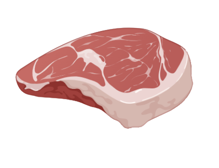
A pathway focused on branched-chain amino acids, or BCAAs.
TARGET · BCAAs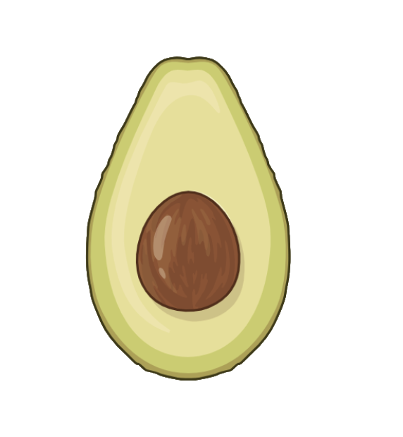
A pathway focused on fatty acids, building blocks of many dietary fats.
TARGET · FATTY ACIDS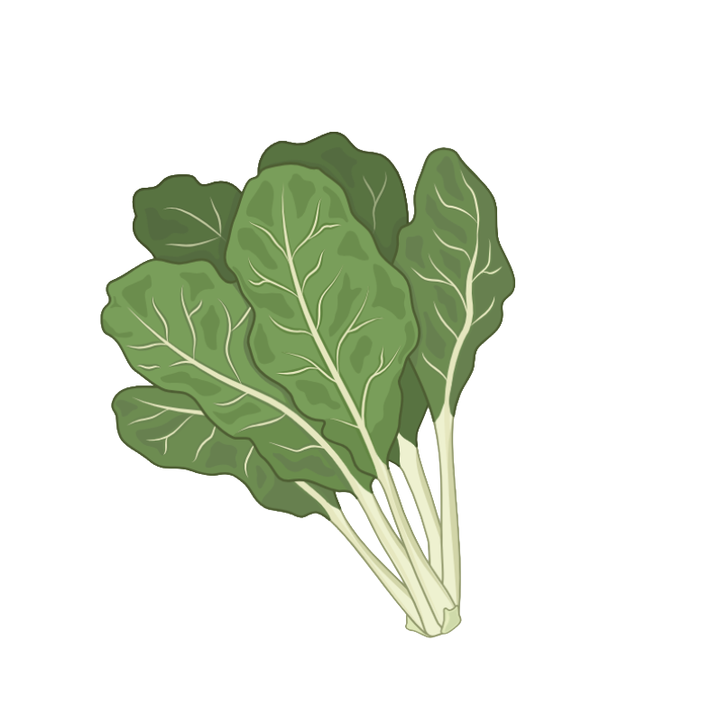
A pathway focused on acetate, associated with microbial metabolism.
TARGET · ACETATEA SMALL PATCH. A NEW PERSPECTIVE.
A wearable electrochemical sensor would look for reporter molecules in sweat. An app could help make those measurements easier to explore.
The interface shown is a design concept. It contains no measured or live health data.
FOLLOW THE PROPOSED SIGNAL
Project illustrations bring the mechanism into focus.
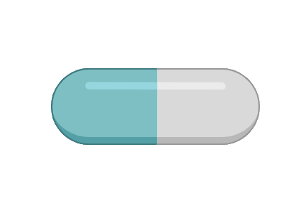
The concept introduces engineered probiotics and substrates to create a biological sensing system.
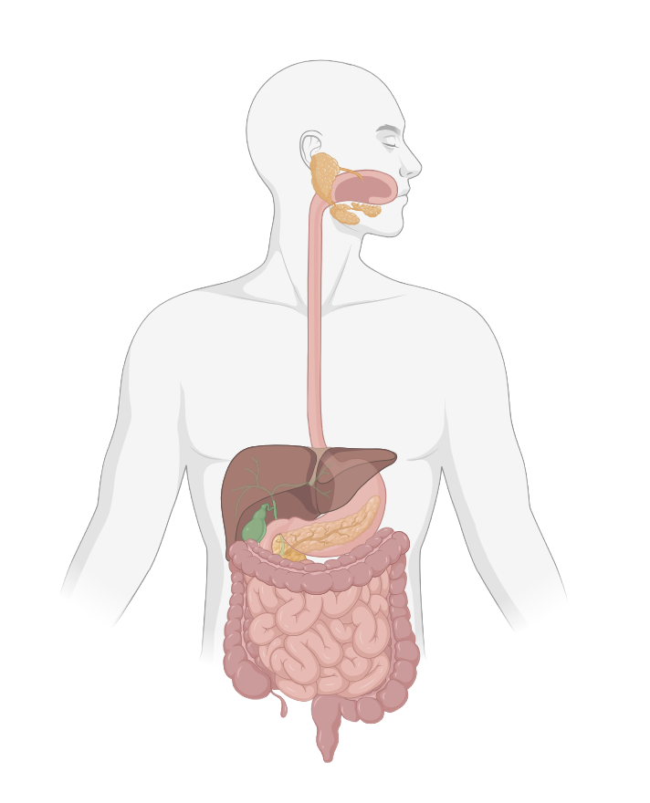
Reporter molecules would need to pass through the body and reach sweat in a detectable form.
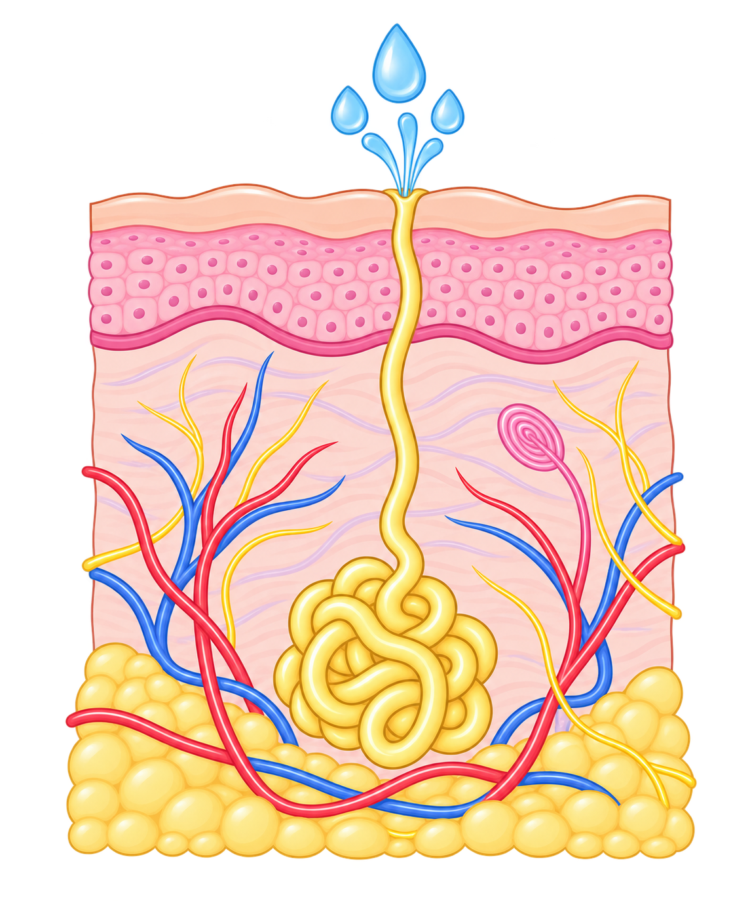
The proposed patch would detect reporter signals in sweat. Transport and detection still need validation.
Conceptual project illustrations, not evidence of a validated biological pathway.
THE ROAD AHEAD
The presentation proposes a research programme from January 2027 to June 2029. The stages below describe its intended progression, not completed milestones.
Investigate whether biological sensing and reporter generation work as intended.
Study reporter transport, sweat detection and the reliability of the sensing approach.
A proposed later stage, dependent on evidence, safety evaluation and appropriate approvals.
CURIOUS? SO ARE WE.
No. This website introduces a research concept described in the OMGut symposium presentation. It is not a product launch or a clinical service.
The source presentation labels key detection and signal-separation figures as expected results. They should be understood as research expectations rather than proof of a validated end-to-end system.
The proposed approach aims to read reporter molecules through a wearable patch. Whether the reporters reach sweat at useful, reliable concentrations is one of the questions the research would need to establish.
The project identifies biosafety, animal welfare, reliability, accessibility and user well-being as considerations. A future system would also need a clear approach to consent and handling personal data.
Personalised nutritional insights are a long-term ambition. The concept has not established a basis for individual dietary or medical recommendations.
THE PEOPLE BEHIND THE IDEA
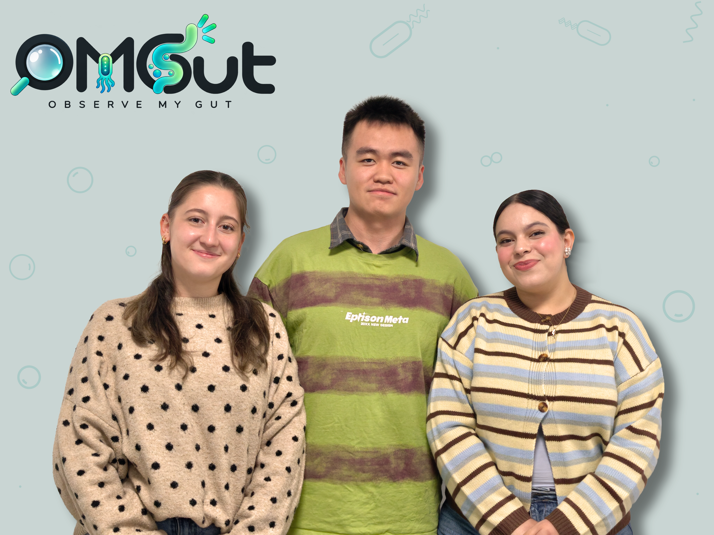
Project team
ely_moldoveanu@yahoo.beProject team
shukaic@outlook.comProject team
fatima2706@outlook.frAcknowledgements in the presentation: Professor Sylvain Fisson and Professor Mingjie Chen.
OUR UNIVERSITIES
A RESEARCH CONCEPT WITH A HUMAN QUESTION